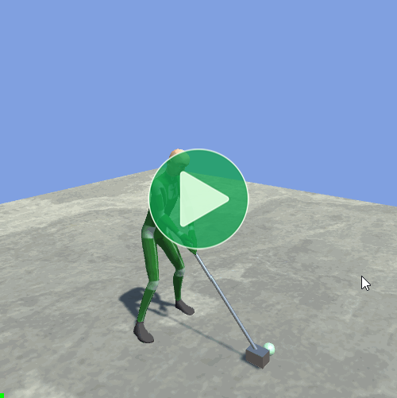
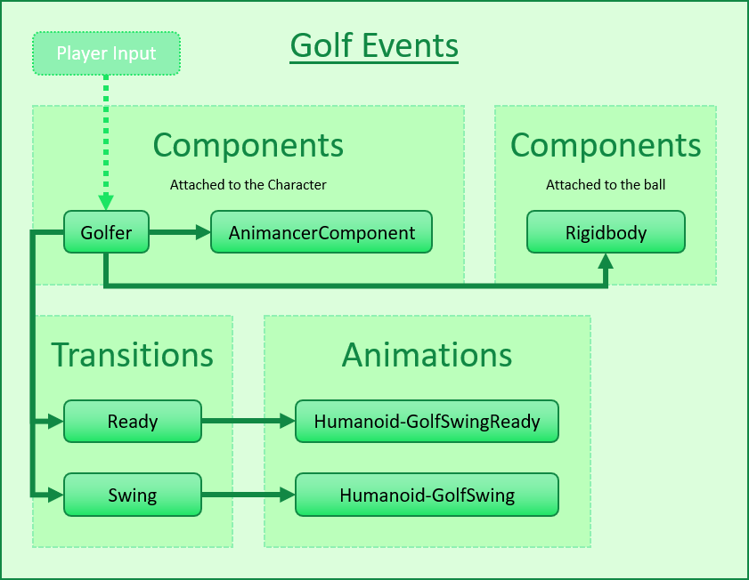
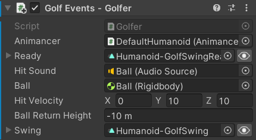
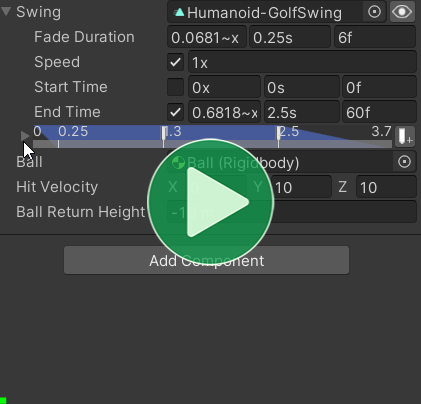
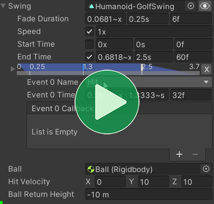
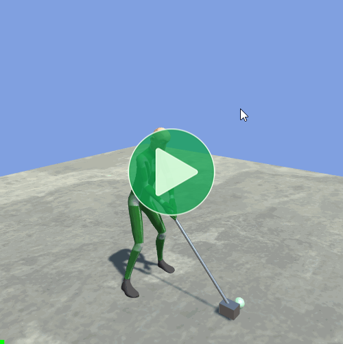
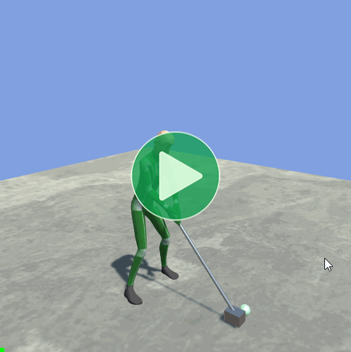
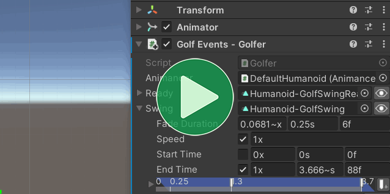

Location: Assets/Plugins/Animancer/Examples/05 Events/02 Golf Events
Recommended After: Basic Character and Footstep Events
Learning Outcomes: in this example you will learn:
How to make a character hit a ball at a specific time during an animation.
How adjust the end time of an animation to create a smoother transition.
How to configure the time of Animancer Events in the Inspector and assign their callbacks in code.
This example demonstrates how you can make a character hit a ball at a specific time and adjust the end time of the animation to create a smoother transition. It uses a Hybrid approach where the event times are configured in the Inspector but the callbacks are left blank so they can be assigned in code instead.
Pro-Only Features are used in this example: Animancer Events and custom Fade durations. Animancer Lite allows you to try out these features in the Unity Editor, but they're not available in runtime builds unless you purchase Animancer Pro.

Summary
- You can leave Animancer Event callbacks blank and set them in code instead. This allows non-programmers to visually preview and tweak the time while keeping the actual logic inside your code as much as possible.
- The Event Names Attribute allows your code to specify which names it expects events to have in order to show what the script supports and avoid spelling mistakes.
- You can adjust the end time of an animation to give a smoother transition into the next animation.
Overview
This example's logic is contained in the Golfer script:
- Play the Idle animation on startup.
- Play the Swing animation when the user clicks.
- Hit the ball when the animation reaches the correct point.
- Return to Idle after the Swing is done.
- Reset the ball to its starting position when it falls far enough down.
using Animancer;
using Animancer.Units;
using UnityEngine;
public sealed class Golfer : MonoBehaviour
{
private const string HitEventName = "Hit";
[SerializeField] private AnimancerComponent _Animancer;
[SerializeField] private ClipTransition _Ready;
[SerializeField, EventNames(HitEventName)] private ClipTransition _Swing;
[SerializeField] private Rigidbody _Ball;
[SerializeField] private Vector3 _HitVelocity = new Vector3(0, 10, 10);
[SerializeField, Meters] private float _BallReturnHeight = -10;
private Vector3 _BallStartPosition;
private void Awake()
{
_BallStartPosition = _Ball.position;
_Ball.isKinematic = true;
_Swing.Events.SetCallback(HitEventName, HitBall);
_Swing.Events.OnEnd = EndSwing;
}
private void OnEnable()
{
_Animancer.Play(_Ready);
ResetBall();
}
private void ResetBall()
{
_Ball.isKinematic = true;
_Ball.position = _BallStartPosition;
}
private void Update()
{
if (_Ball.isKinematic)
{
if (ExampleInput.LeftMouseDown)
{
_Animancer.Play(_Swing);
}
}
else if (_Ball.position.y < _BallReturnHeight)
{
ResetBall();
}
}
private void HitBall()
{
_Ball.isKinematic = false;
_Ball.velocity = _HitVelocity;
}
private void EndSwing()
{
var fadeDuration = AnimancerEvent.GetFadeOutDuration();
_Animancer.Play(_Ready, fadeDuration);
}
}
The general code structure is very simple since there's only one script which controls everything:

Fields
| Code | Description |
|---|---|
|
The first few fields are similar to the Transitions example. The_Ready transition uses the Humanoid-GolfSwingReady animation. |
|
The |
|
The ball's Rigidbody and amount of velocity to give it when the hit event is triggered. |
|
The ball's position is stored in Then when the ball's Y position falls below the [Meters] is one of the Units Attributes which makes that field show a "m" suffix in the Inspector as you can see in the image below.
|

Awake
When the scene starts, the script stores the position of the ball so we can teleport it back there later and make sure its Rigidbody is Kinematic so that it doesn't roll away before the character hits it.
private void Awake()
{
_BallStartPosition = _Ball.position;
_Ball.isKinematic = true;
It also sets the event callbacks (which will be explained later):
_Swing.Events.SetCallback(HitEventName, HitBall);
_Swing.Events.OnEnd = EndSwing;
}
On Enable
The script also needs to tell the character to play the Ready animation:
private void OnEnable()
{
_Animancer.Play(_Ready);
For the same reason, it also needs to reset the ball:
ResetBall();
}
private void ResetBall()
{
_Ball.isKinematic = true;
_Ball.position = _BallStartPosition;
}
Update
Every frame, if the ball has been reset and the user Left Clicks, start swinging:
private void Update()
{
if (_Ball.isKinematic)
{
if (ExampleInput.LeftMouseDown)
{
_Animancer.Play(_Swing);
}
}
Otherwise the ball has been hit so just check if its Y position is below the _BallReturnHeight to reset it:
else if (_Ball.position.y < _BallReturnHeight)
{
ResetBall();
}
}
Hit Ball
The HitBall method makes the ball Non-Kinematic so that it will act according to physics and gives it an initial velocity to make it fly off:
private void Awake()
{
...
_Swing.Events.SetCallback(HitEventName, HitBall);
...
}
private void HitBall()
{
_Ball.isKinematic = false;
_Ball.velocity = _HitVelocity;
}
In a real golf game you would probably calculate the hit velocity based on player input (for example, you might apply an amount of force proportional to how long they hold down the swing button).
Event Names
Since we "know" there's only one event (excluding the End Event), the script could just set its callback using its index:
_Swing.Events.SetCallback(0, HitBall);
But that means the Inspector won't give any indication of what the event does or is for, it would just be a marker at a time without any clear purpose. That might not be a problem if you're working on your own and only have a few events, but would be unhelpful in more complex situations.
That's why events have a Name field:

Once the event has been given a name, the script can set the callback of whichever event has that name:
_Swing.Events.SetCallback("Hit", HitBall);
If the animation doesn't have an event with that name, it will throw an exception because that usually means the transition's events haven't been set up as needed for the script to work properly. If you want the event to be optional, you could use Events.IndexOf then use that index to set the callback.
Attribute
Using Magic Strings isn't great because there is no indication in the Inspector of which event name the script is expecting and you have to type the name manually. Fortunately, you can avoid that using the Event Names Attribute:
- Make a
stringconstant containing the name:
private const string HitEventName = "Hit";
- Use the constant to set the callback:
_Swing.Events.SetCallback(HitEventName, HitBall);
- Put an
[EventNames]attribute on the transition field with the constant to tell it which names are supported (theEventNamesAttributeAPI page explains various other ways of using it):
[SerializeField, EventNames(HitEventName)] private ClipTransition _Swing;
- That attribute makes the Inspector show a dropdown to choose from the exact names supported by the script:

Note that values selected using the dropdown menu are still stored as strings. Modifying the names in the script will NOT automatically update any values previously set in the Inspector.
End Swing
The End Event returns the character to the Ready animation:
private void Awake()
{
...
_Swing.Events.OnEnd = EndSwing;
}
private void EndSwing()
{
var fadeDuration = AnimancerEvent.GetFadeOutDuration();
_Animancer.Play(_Ready, fadeDuration);
}
Early End
If we wait for the actual end of the swing animation before we start transitioning to idle (the video on the left), we can observe an unnatural change in the motion when the transition begins. The swing animation goes up to the top of the arc and begins to relax, then when that animation actually finishes it starts transitioning from that pose to Idle. It's fairly smooth, but it's clearly a different motion from the end of the swing.
| Standard End | Early End |
|---|---|
|  |  |
This can be improved by simply starting the transition early (the video on the right) and having it last for the entire remaining duration of the swing animation so that the "relaxation" of the character's pose consistently comes from both the end of the swing animation and from the Fade towards Idle at the same time. This is done by moving the event time to be a bit earlier using the Transition Preview Window to find where the animation pose starts relaxing:

Then having the EndSwing method call AnimancerEvent.GetFadeOutDuration to get the remaining duration instead of using the regular duration of the _Ready transition:
private void EndSwing()
{
var fadeDuration = AnimancerEvent.GetFadeOutDuration();
_Animancer.Play(_Ready, fadeDuration);
}
Conclusion
Using events like this is often more effective than doing it all in the Inspector because it achieves better separation of concerns:
- Visual data (i.e. the event times) should be configured in the Unity Editor so it can be easily tweaked and previewed without needing a programmer to modify the code, wait for it to recompile, and go through your application until you get to the right place to test it.
- Logic (i.e. the event callbacks) should be defined in code so it can be properly organized and maintained without needing to hunt back and forth between the code and the Unity Editor data to figure out how things work.